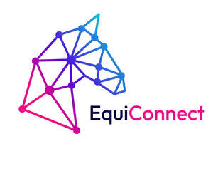

Trade Mark Journal No.2025/026 27 June 2025
UK00004219758 16 June 2025 (9,42,44)

- Class 9
- Computer software for monitoring animals; computer software applications for monitoring animals; software applications for monitoring animals; computer software for monitoring animal health and welfare; computer software applications for monitoring animal health and welfare; software applications for monitoring animal health and welfare; computer software for monitoring animals, diagnosing illness and measuring welfare outputs; computer software applications for monitoring animals, diagnosing illness and measuring welfare outputs; software applications for monitoring animals, diagnosing illness and measuring welfare outputs; computer vision software for measuring animal's emotional state.
- Class 42
- Software as a service for monitoring animals; software as a service for monitoring animal health and welfare; software as a service for monitoring animals, diagnosing illness, and measuring welfare outputs; cloud computing for monitoring animals; cloud computing for monitoring animal health and welfare; cloud computing for monitoring animals, diagnosing illness, and measuring welfare outputs.
- Class 44
- Veterinary services; veterinary consultancy services; animal health care services; monitoring and diagnostic services for animal health and welfare; providing animal health and welfare information; animal health advice and consultancy services provided remotely; conducting assessments of animals’ health and emotional states; provision of services for monitoring and analysing animal health, welfare, and emotional states; providing veterinary advice based on collected data regarding animals’ behaviour, health, and welfare; advisory and consultancy services in relation to animal welfare and well-being; telemedicine services for animals; well-being assessments for animals; consultancy related to improving animal welfare and emotional states.
Vet Vision AI Limited
Representative: Harper James Ltd